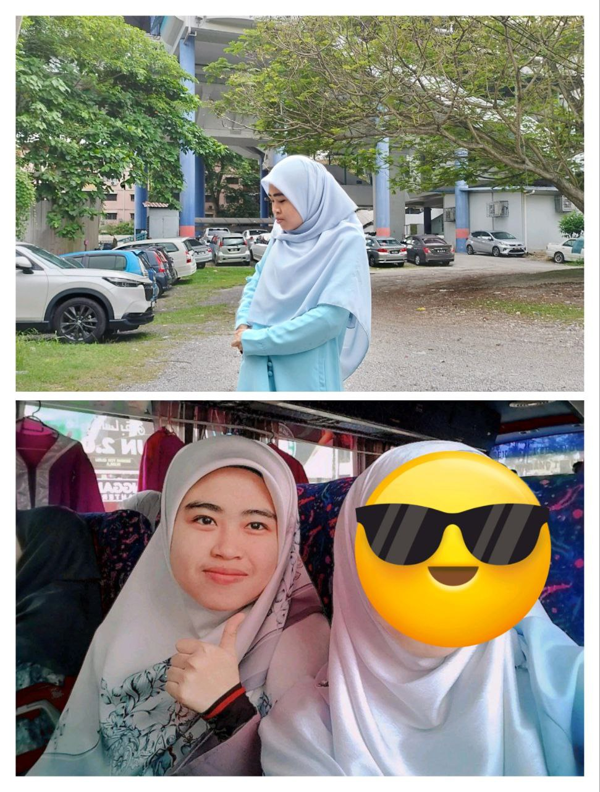
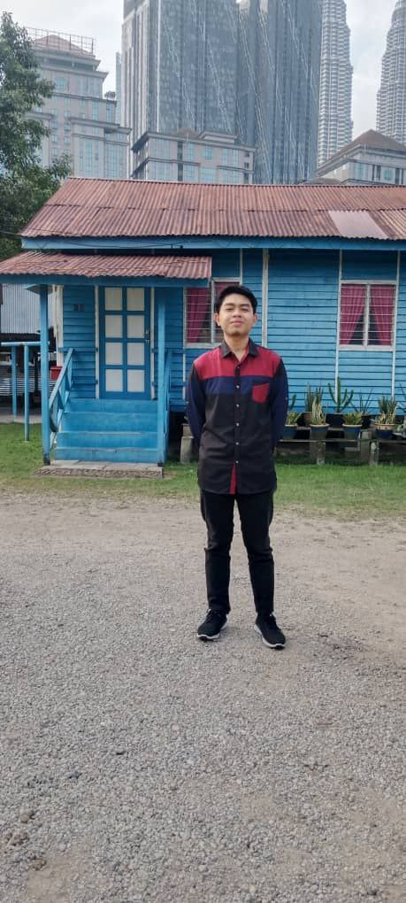
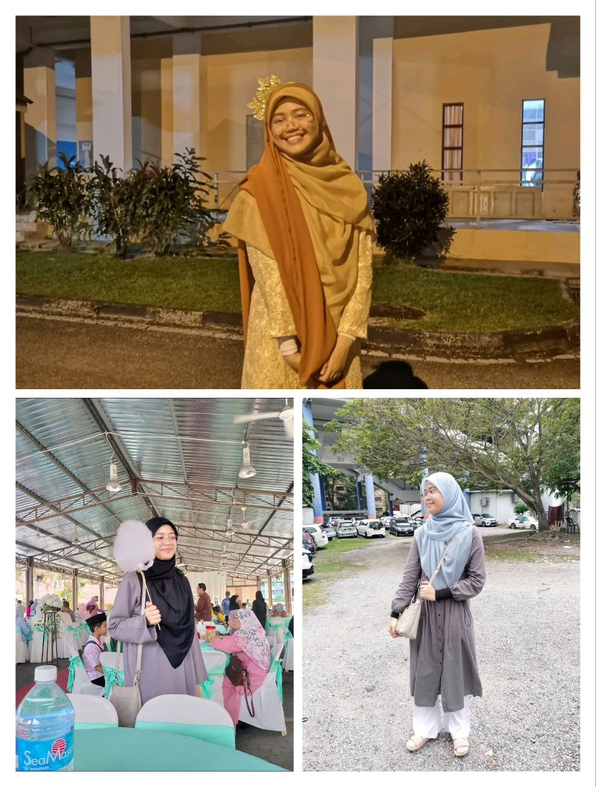
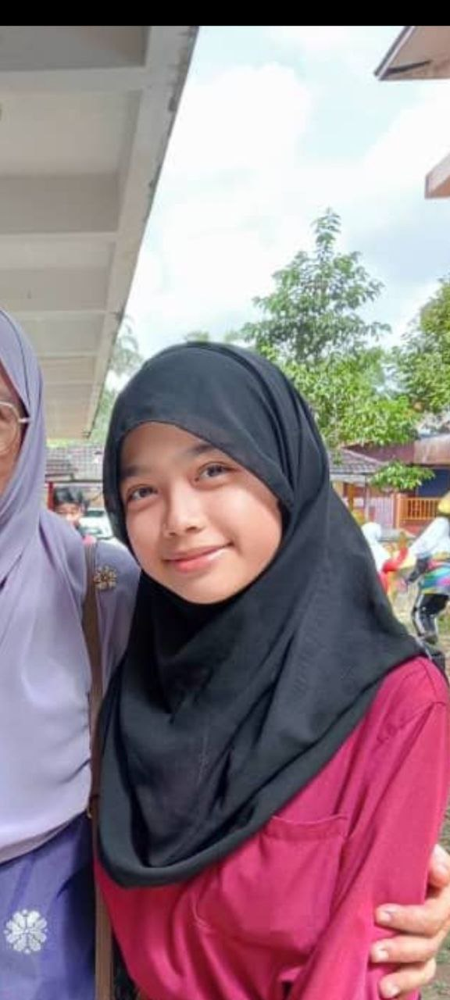

This is my little family. It's hard for us to take the pictures with a complete members, so I need to compile this two pictures became one.
| Pictures | Description |
|---|---|
|  | My name is Nur Ain Faatihah binti mohd Anuar.I am 21 years old. I was born on February 18, 2003 in Hospital Sultanah Nur Zahirah, Kuala Terengganu. I have 4 siblings and I am the eldest. My hobby is walking and enjoying nature. Then, I would describe myself as a quiet and random. Mostly, I will do whatever that are cross on my mind at that time and somehow, it's make people around me happy with it. |
|  | This is Adam, one and only man in our siblings. He is 19 years old. Now, he was furthering his study in Sijil Tinggi Pelajaran Malaysia (STPM) at Sekolah Menengah Kebangsaan Durian Mas, Dungun, Terengganu. He was a smart student at that school and he got full A in his semester 1 examination. He always do a revision about the studies and like to help his friends with the studies. |
|  | This is Aleya Maisarah. She is 17 years old. She was very active at her school and friendly. English subject is her most favourite subject. Most of the time, I will spend my time with her whenever we are going somewhere. She has a happy personality and always help her friends. Now, she was in form 5 and its her last year in Sekolah Menengah Islam Darul Iman (SMIDI). |
|  | This is Aishah, the youngest one. On this year, she turns to 12. The age gap between me and her is 9 years old. For me, it was really challenging to communicate with her because she has a very different personality with me. She likes to socialize and talk too much, but sometimes she has cross the limit. When I give her the advice, she doesn't care it too much and don't respect me as the eldest. However, she has a pure heart and likes to help others the most among us. For example, she will give her brother and sisters her money whenever we say don't have it. She was very popular among the teachers at her school beacuse of her friendly personality. |